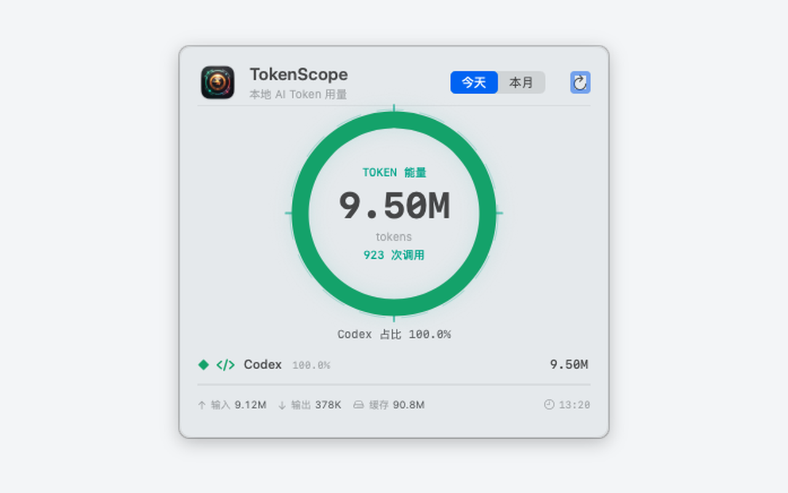
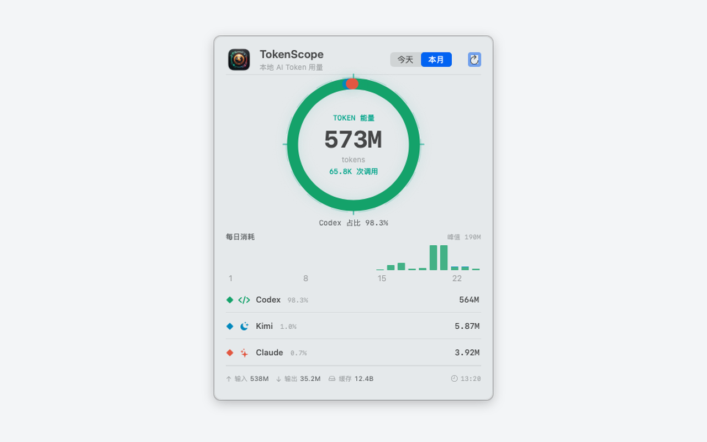

Native macOS dashboard
TokenScope
Track local AI coding agent token usage from one quiet desktop panel and WidgetKit widget.
Today and month views
Daily totals, monthly charts, and input, output, and cache token breakdowns.
Desktop-first
A native panel that can live behind desktop icons or float above windows.
WidgetKit included
Small and medium widgets keep aggregate usage visible at a glance.
Local by design
Usage metadata, not your conversations.
TokenScope reads local usage records and displays aggregate counts. Prompt text, model responses, OAuth data, API keys, and provider configuration are not persisted or displayed.
No prompt or response storage
App Sandbox compatible
Localhost-only widget bridge
Monthly rhythm
See usage patterns across the current month.

Agent coverage
Built for the tools already leaving local traces.
- Codex
- Claude Code
- Kimi Code
- OpenCode
- Gemini CLI
- GitHub Copilot
- Cursor
- Qoder
- Windsurf
- Cline
- Trae
- Oh My Pi
Open source
MIT licensed and ready to build.
Requires macOS 14+, Xcode 16+, and XcodeGen.
make test
make run